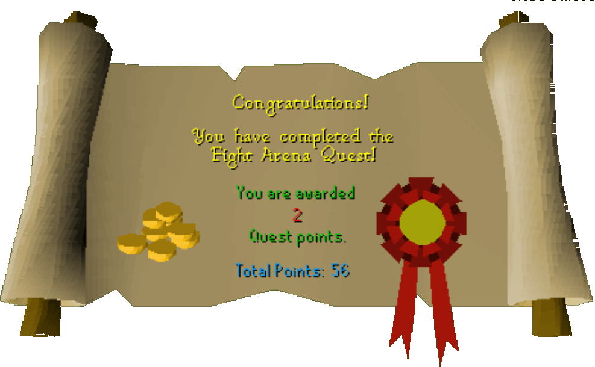

Fight Arena
Description: The prosperous Servil family have been abducted by the infamous General Khazard. He plans to have the family battle for his entertainment in the fight arena. Can you rescue the Servil's before the tyrant has these innocent (not to mention wealthy) civillians slain.Difficulty: Experienced
Length: Medium
Items & Skills Needed:
- The ability to defeat level 44, 55, and 132 enemies (all can be safespotted)
Recommended:
- Decent weapon and armor
- Alternatively: Any Magic level and runes to cast combat spells or 50+ Ranged and ranged gear
Reward: 2 Quest points, 3,375 Thieving XP, 12,175 Attack XP, 1,000 coins
Instructions:
Talk to Lady Servil and agree to help her rescue her family. Head east and go into the most northeastern house, open the chest and take armor, put it on.
Go just south into the prison, the guard will let you in if your wearing the armor. Talk to Jeremy through the cage. He'll tell you the guard has the keys.
Go into the southeast corner room and talk to the guard. He'll mention that Khali brew makes him sleep. Go west to the tavern and grab some. Then return and speak to him. He'll give you the keys and get drunk.
Note: For the following steps, the enemies can follow you anywhere in the arena, so use that to your advantage if you are using Magic or Ranged. There's a carcass on the west side of the scaffold; position yourself on one side of it and your opponent on the other. You can shoot at him without getting attacked. In my opinion, using Magic is much more effective than Ranging.
Use the keys on Jeremy's door and you'll run out to the arena. Save Justin Servil from a level 55 Khazard ogre. The General will take you prisoner to fight again after you kill the ogre.
Talk to Hengrad, and soon you'll be taken out to the arena to fight again. First, you'll have to defeat a level 44 Khazard Scorpion. Defeat it to fight the level 132 Bouncer. After you defeat them both, a level 112 General Khazard will appear. Fighting him is optional.
While avoiding General Khazard's attacks, talk to Jeremy Servil and then leave through the door. Then head to Lady Servil to claim your reward. (Congratulations)
Congratulations, Quest Complete!

This quest guide was written on RuneHQ by Gnat88. Thanks to rs, blakmagic123, and Keystone for corrections.
This quest guide was entered into the database on Wed, Mar 03, 2004, at 02:52:53 PM by Fudge and was last updated on Mon, Apr 19, 2004, at 11:46:13 AM.